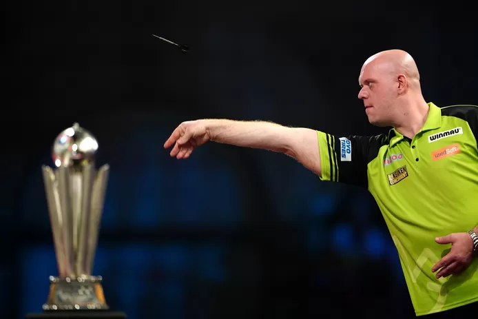

Indrukwekkende Michael Smith bekroont ninedarter met wereldtitel in finale tegen topfavoriet Van Gerwen
Michael Smith heeft zich voor het eerst tot wereldkampioen darts gekroond. De Engelsman
legde in een hoogstaande finale topfavoriet en
‘Dancing Dimi’-killer Michael van Gerwen over de knie. Als kers op de taart gooide de nieuwe
wereldkampioen ook nog eens een ninedarter in de finale.
De strijd der Michaels. Een vierde voor Van Gerwen of een eerste voor Smith? De finale van het WK darts was
niet alleen een krachtmeting tussen de twee beste darters van de voorbije weken, maar bij uitbreiding van
het voorbije jaar. Naast de wereldtitel stond ook de nummer één-positie op de PDC Order of Merit op het spel.
Wright en Price lagen er als wereldkampioenen van 2022 en 2021 voor de halve finales uit.
The winner would take it all in een heruitgave van de finale van 2019.
De zenuwen stonden strak gespannen. Smith begon aarzelend, terwijl Van Gerwen een snelle
setwinst liet noteren. Daarna ging het niveau met een ruk de hoogte in. De ene maximumscore
na de andere vloog de fans in ‘Ally Pally’ om de oren. Het record van 880 180's op een WK
ging er met dank aan Smith en Van Gerwen trouwens aan in de finale. Moet het nog gezegd dat het een hoogstaande wedstrijd was?

Een ninedarter kon haast niet uitblijven. In een waanzinnige leg konden zowaar beide
spelers het summum van de dartssport realiseren. Van Gerwen miste bij
zijn laatste pijl, Smith lukte zijn kunststukje wel. Het was de eerste
ninedarter van het toernooi en pas de tweede ooit in de finale van het
WK darts. Smith kwam op een 2-1-voorsprong. Van Gerwen voor het eerst sinds lang op achterstand.
De Nederlander liet het niet aan z’n hart komen. Integendeel, Van Gerwen ging haasje-over
naar 2-3. De twee losten elkaar daarna voor geen vin. In de zevende set kwam er dan
eindelijk een tikje. Van Gerwen dacht gewonnen spel te hebben, maar Smith vocht
vanuit een verloren positie terug. De Engelsman ging erop en erover en kwam 4-3
voor. In een mum van tijd werd het vervolgens 5-3 en zelfs 6-3. Een beslissende
kloof?
Daar leek het eerst niet op, want Van Gerwen weerde zich nog kranig.
In de elfde set leek de Nederlander zelfs op weg om een comeback te realiseren
na een vroege break, maar Smith vond net op tijd z'n ritme terug. De Engelsman breakte terug en maakte
het vervolgens af op z'n eigen leg. Niet topfavoriet Van Gerwen, maar Michael Smith mag zich de nieuwe wereldkampioen noemen.
In de Western Conference voegde Memphis zich bij Denver aan de top van het klassement na een 107-131 overwinning tegen Charlotte. Vlak achter het leidende duo bevestigde New Orleans zijn derde plaats door Houston met 119-108 te verslaan. Sacramento blijft vijfde ondanks een 117-120 verlies tegen Atlanta.